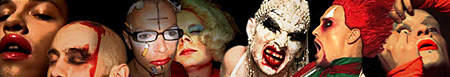

| dunst RECOMMENDS: CSD, Berlin | 24. +25 June 2005 |
 |
|
| The Thom, Minimal Martin, AleX.T.C, Miss Fish, Hairwerk,
Tina Trasch. The dunst performance group range from spoken words, performance art to electro-punk-glam-disco-queer-art-rock. This time 5 performers will visit Berlin. KINZO klub Karl-Liebknecht-Straße 11, Berlin. |
|
| Friday 24.06 HOMOPHOBIA KINZO all-night-queer-lounge-shows with dj minimal martin |
Saturday 25.06 HOMOPHOBIA CSD-party solo performances/concert |
|
The Thom singer, make up artist and visual artist Currently based in London studying art. Working on an installation project with music by Fil Ok from ATOMIZER, who founded the notorious club Nag Nag Nag in London. Incredible looks, voice and stage appearance. Tina Trasch Tina is Trash if you ask her: I am Tina Trash and I am a fucking mess. I am a blue eyed bitch, looking for my tits. I am an angry dick, waiting to get ritch. I love it right now ! Shows range from spoken word to twisted drags acts and angry electro songs. Hairwerk dj, stylist, singer and performance artist His looks are imaginative, colourfull and psychedelic. His musical style is a raw blend of electro with a twist of glam-rock. Miss Fish singer, songwriter and performance artist Currently working with dj minimal martin and guitarist Luis To Kill from berlin electro rockers Glamour to Kill on the EP "the beauty regime". The style is electro-garage-punk. Miss Fish is an impossible super natural being - half man, half fish surviving in the dry atmosphere on earth. Nuclear Family performance artists "They Fuck you up, your mom and dad." seems to be the short version of the Nuclear Family. They are two cartoonish brats in love with make up, fake fur and annoying electro beats and they come to Berlin just one week after their wedding at the Townhall of Copenhagen. But as with anything else, they don't give a fuck about what other people think marriage has been made for. Or as they put it "God never gave me a cunt, but he gave me an asshole." Minimal Martin dj, composer, painter, grafitti artist Cherised dj on the queer underground scene and up and coming on the copehagen club scene. Technically skilled beat mixer and original style with a base in minimal techno. Currently working on "the beauty regime EP" with miss fish and on a solo project in ambient/minimal techno. |
|
| Tilbage |